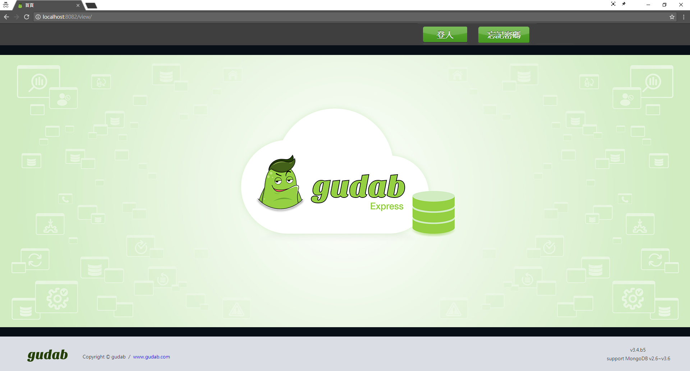

使用說明

安裝
監控對象(MongoDB)支援說明
(一)支援MongoDB版本：v2.6 ~ 3.6
(二)支援OS版本
a.Rehat6、Redhat7
b.CentOS6、CentOS7
c.Ubuntu14、Ubuntu16
d.Windows Server 2008 R2 64-bit and later
(三) 建立 Linux Service Account：參考 gudab_v3.6.1.0_系統整合書。
(四) 建立 MongoDB Service Account：參考 gudab_v3.6.1.0_系統整合書。
(五) 編輯 hosts file：參考 gudab_v3.6.1.0_系統整合書。
gudab系統需求
(一) Java 1.8
(二) OS版本
- Redhat6、Redhat7
- CentOS6、CentOS7
- Ubuntu14、Ubuntu16
- Windows Server 2008 R2 64-bit and later
(三) 硬體資源
- CPU：最低需求 4core、建議8core以上。
- RAM：最低需求 16GB、建議32GB以上。
- Disk： 所需準備的空間 = 安裝 + 指標 + 備份
- 安裝：300MB。
- 指標：最低需求為 10GB，建議 20GB。( 10 host/month)。
- 備份：最低需求為 data size的 1.5倍、建議 2.5倍以上。
註：至少一台ConsoleDB (MongoDB)，只監控不備份。
gudab Enterprise下載安裝步驟
(一) 到官網免費下載 gudab Express http://www.gudab.com/
(二) 解壓縮於任意目錄，但路徑名稱不可有特殊字元符號，例. []。
(三) 編輯 hosts file：參考 gudab_v3.6.1.0_系統整合書。
(四) 以SSH公開金鑰認證、編輯 SSH properties file：參考 gudab_v3.6.1.0_系統整合書。
(五) 編輯 gudab properties file：gudab_v3.6.1.0_系統整合書。
(六) 防火牆連接埠設定(可選-全備用)：gudab_v3.6.1.0_系統整合書。
(七) 準備檔案到指定路徑(可選-全備用)：參考 gudab_v3.6.1.0_系統整合書。
(八) 變更 consoleDB 的密碼：執行 changePwd.sh (linux) 或 changePwd.bat (windows)。
(九) 啟動 gudab：執行 start.sh (linux) 或 start.bat (windows) PS. windows 用戶要"以管理員身分執行"。

首頁與登入
首頁與登入
使用者可透過瀏覽器連結至以下網址「http://localhost:8080/view」，即可進入gudab系統的登入頁面，例. http://192.168.1.64:8080/view 。
點選「登入」，輸入帳號與密碼後，按下「登入」，若帳號與密碼經過認證成功後，即可登入gudab系統，系統會自動顯示「系統監控」模組的首頁。
gudab系統安裝完成後，系統中所預設的管理者帳號為「root」，管理者密碼為「root」。建議使用者登入gudab系統後，可利用「個人資料」功能來變更管理者密碼，以確保系統安全性。<詳見 6.1 個人資料>
假設今日為 20180118
- 到期日為 20180130
- 過期前1個月內顯示提示訊息
- 初次登入，左上會提醒試用Enterprise 30天的到期日。
3-1 首頁登入(過期前1個月) - 到期日為 20171225
- 過期後1個月內顯示告警訊息，並倒數可用天數。
- 請訂閱 Enterprise，或降版至Express。
- 點擊畫面上的按鈕，永久降版至Express。
3-2 首頁登入(過期後1個月)  3-3首頁登入(Express) - 到期日為 20171212
- 過期超過1個月鎖住畫面
- 請訂閱 Enterprise，或降版至Express。
3-4 首頁登入(Expired)

監控管理
系統監控首頁
「系統監控」模組的首頁會顯示目前被監控中的MongoDB 伺服器列表以及狀態資訊。
| 欄位 | 說明 |
|---|---|
| 架構類型 | 該MongoDB伺服器的伺服器類型，包含以下類型 : SA (StandAlone) RS (Replica Set) SC (Sharded Cluster) |
| 燈號 | 此燈號代表是目前該MongoDB 伺服器的狀態，綠燈代表正常運作中，紅燈則代表該伺服器目前已停止運作或狀態異常。 |
| 別名 | 用戶自定義名稱。預設為 "host:port" |
| 伺服器名稱 | 該MongoDB伺服器的主機名稱。固定為 "host:port"，點擊連結可看其指標。 |
| RS成員 | RS成員的角色，包含以下類型 : (P) PRIMARY (S) SECONDARY (A) ARBITER |
| 版本 | 該MongoDB伺服器的MongoDB版本。 例. 3.4.10 |
| 啟動時間 | 該MongoDB伺服器啟動後的運行時間。 例. 4D 23H 0m |
| 回應時間 | 該MongoDB伺服器最後被監控連線的時間。例. 2018-01-19 08:26:40 |
 |
(編輯)設定 Exception Time。 |
 |
(刪除) 按下此按鈕即可刪除該該MongoDB伺服器的監控設定。 |
| 欄位 | 說明 |
|---|---|
 |
所有成員正常監控中 |
 |
部分成員處於例外時間，其餘成員正常監控中 |
 |
所有成員處於例外時間 |
 |
所有成員脫離監控 |
 |
部分成員脫離監控 |
設定受監控對象(MongoDB資訊)
首次登入，預設只會監控 gudab內建的 consoleDB。
若需要監控某台MongoDB伺服器，可透過「新增伺服器」將該伺服器加入監控列表中。
請輸入以下欄位資訊：
(一) 伺服器的主機名稱 : MongoDB伺服器的主機名稱(此欄位為必填)。
(二) Port : MongoDB伺服器 所設定的Port(此欄位為必填)。
(三) 資料庫使用者名稱 : 若該MongoDB伺服器有設定帳號控管，則須輸入此使用者名稱。
(四) 資料庫使用者密碼 : 若該MongoDB伺服器有設定帳號控管，則須輸入此密碼。
＊Auto Discovery
若您加入的MongoDB為叢集成員(Replica Set, Sharded Cluster)，本監控系統會自動帶出此叢集的所有成員進行監控。

自動重啟機制
(規劃中)當監控的MongoDB無法連線或process不存在時，可額外設定是否對MongoDB進行重啟動作。例如當MongoDB Process未預期消失時，gudab可自動SSH進到該Server，執行準備好的linux script，進行MongoDB啟動作業。
監控指標
若需要檢視MongoDB伺服器的監控指標，可直接點選伺服器列表中該伺服器的HOST欄位，即可檢視各種監控指標。
如下圖所示，左方選單為監控指標群組，包含「我的最愛」、「Host Status」、「Utilization」、「Events」、「Saturation」、「Throuhgput」、與「Performance」等群組，直接點選該群組，下方即會顯示群組下的指標項目，點選該指標，右方即會顯示該指標的圖形。
以Connections指標為例，如上圖所示，該MongoDB伺服器的連接數量會以折線區域圖的方式來呈現，X軸(顯示區間)是該資訊被記錄的時間，Y軸則是該資訊的數值。使用者可點選「時間刻度」與「顯示區間」來變更指標資料的顯示方式與範圍。
時間刻度是指要以何種資料取樣時間 (頻率)來顯示，如下圖48監控指標-2所示，若時間刻度選擇5sec，則資料取樣時間會以每5sec的資料來顯示，下圖上方圖形的資料取樣時間為13:27:17，下圖49監控指標-3 (下一筆資料)的資料取樣時間則為13:27:22。顯示區間則是X軸所要顯示的資料取樣範圍，如下圖所示，若顯示區間選擇10min，則X軸會顯示最近10min的資料。
每種時間刻度皆會提供預設的數組顯示區間，以方便使用者操作。目前共有4種時間刻度可選，各自對應3種不同的顯示區間。
- 5sec(10min,30min,1hr)
- 1min(100min,3hr,6hr)
- 5min(3hr,6hr,12hr)
- 1hr(1day,1week,2week)
點選愛心旁的方框，會顯示data point。點選 Auto，會關閉圖表刷新。點選 SI時，會列出 SI的比例關係。註：data point介於 50到 300個才可點選方框，小於 50個時，會強制顯示、大於300個時會強制關閉。
| Host Status | ||
|---|---|---|
| CPU | cpuUS | CPU總體使用率 |
| cpuID | CPU空閒比率 | |
| cpuWA | CPU等待IO比率 | |
| cpuPidUS | Mongo的CPU使用率 | |
| Memory | memTotal | Server總共有多少Memory |
| memFree | 剩餘的Memory | |
| memUsed | 使用中的Memory | |
| mongoVirt | Mongo使用的虛擬記憶體總量(Swap+Res) | |
| mongoRes | Mongo使用非被置換的實體記憶體大小 | |
| mongoShr | Mongo使用共用記憶體大小 | |
| mongoUsed | Mongo使用的虛擬記憶體百分比 | |
| Swap | swapTotal | Server總共有多少Swap Memory |
| swapFree | 剩餘的Swap Memory | |
| swapUsed | 使用中的Swap Memory | |
| Storage | size | Mongo的dbPath共有多少空間 |
| used | Mongo已使用的storage空間 | |
| alive | Mongo的dbPath剩下的空間 | |
| percent | Mongo使用storage的百分比 | |
| Utilization | ||
| Connections | connections | 用戶連線的數量 |
| Cursors | open | 當前 cursors 的數量 |
| timedOut | 啟動至今，過期 cursors 的總數量 | |
| DbMemory | mapped | 映射的記憶體量。 |
| mappedWithJournal | 映射的記憶體量 (包含 journal) | |
| resident | 當前使用的記憶體量 | |
| virtual | 使用的虛擬記憶體量 | |
| Journaled Size (V2.6) | size | 上一次 journal group 提交期間，寫入 journal 的資料量 |
| WiredTiger Cache (V3.4) | current | 正在使用的資料，佔 WT cache 的大小 |
| maximum | WT cache 上限的大小 | |
| dirty | 異動過的資料(髒資料)，佔 WT cache 的大小 | |
| WiredTiger Transactions (V3.4) | readAvailable | WT 讀交易 tickets，可用的數量 |
| readOut | WT 讀交易 tickets，當前使用的數量 | |
| writeAvailable | WT 寫交易 tickets，可用的數量 | |
| writeOut | WT 寫交易 tickets，當前使用的數量 | |
| Events | ||
| Asserts | msg | 啟動至今，message asserts 的數量。來自各種 DB 內部錯誤，例如參數不在指定範圍內 |
| regular | 啟動至今，regular asserts 的數量。違反不變條件的操作，例如讀取 BSON 檔案失敗 | |
| user | 啟動至今，user asserts 的數量。這些是由使用者所產生的錯誤，例如磁碟空間不足、重複鍵值、無權訪問 | |
| warn | 啟動至今，warning 的數量。不是嚴重錯誤，但仍需檢查，多數與環境配置有關，例如 ulimit, readahead 太小，使用 root 啟動 DB | |
| Page Faults | pageFaults | 發生 page faults 的總數量 |
| Saturation | ||
| Current Queue | readers | 因為 read lock，當前操作佇列 (queued) 的數量 |
| total | 因為 lock，當前操作佇列 (queued) 的總數量 | |
| writers | 因為 write lock，當前操作佇列 (queued) 的數量。 | |
| Journaled Lock (V2.6) | lock | 提交時，寫鎖被取走的次數 |
| Throughput | ||
| Active Clients | readers | 當前的用戶端連線，發起讀操作的數量 |
| writers | 當前的用戶端連線，發起寫操作的數量 | |
| Network | in | 接收的網路傳輸量 |
| out | 發送的網路傳輸量 | |
| Opcounters | command | 啟動至今，執行指令的總數量 |
| delete | 啟動至今，刪除操作的總數量 | |
| getmore | 啟動至今，getmore 操作的總數量 | |
| insert | 啟動至今，新增操作的總數量 | |
| query | 啟動至今，查詢操作的總數量 | |
| update | 啟動至今，修改操作的總數量 | |
| Performance | ||
| Replication Oplog | timeDiff | 剩餘同步時間 |
| replicationLag | Secondary 同步 Primary 的延遲時間 | |
| replicationHeadroom | 記錄 oplog 第一筆與最後一筆的時間間隔 (Oplog Window) | |
| Background Flush (V2.6) | lastFlush | 上一次落盤操作，所花費的時間 |
| Journaled Time (V2.6) | time | Journaling 後，寫入 data files 的時間 |
| Index (V2.6) | accesses | 操作訪問索引的次數 (hits+misses) |
| hits | 操作訪問的索引在記憶體的次數 | |
| misses | 操作訪問的索引不在記憶體的次數 | |
我的最愛
使用者可將不同群組中的監控指標加入「我的最愛」群組中，如下圖所示，請點選「加入我的最愛」的愛心圖案，待愛心圖案變成全紅，即代表設定完成。
另外提供「我的最愛」設定頁面，一次總覽所有的分類細項，如下圖所示，請勾選或取消監控的項目。
使用者可點選「我的最愛」群組，如下圖所示，系統即會顯示方才所加入的監控指標。
歷史活動資訊
歷史活動資訊
「系統狀態列表」會顯示依照時間來顯示目前被監控中的MongoDB 伺服器所發生的歷史活動訊息與狀態。
| 欄位 | 說明 |
|---|---|
| DATE | 發生該活動的日期 |
| HOST | 發生該活動的MongoDB伺服器的主機名稱 |
| ACTIVITY | 發生的活動訊息 |
使用者管理
個人資料
登入系統後，若需要檢視或更新本身的個人資料，可按「個人資料」，系統會顯示目前的個人資料，包含帳號、Email、密碼與密碼確認。
若需要更新個人資料，可直接輸入更新資料，並按「送出」。若不需更新資料，請按下右上方X按鈕來關閉本頁面。
首次使用系統中所預設的管理者帳號root登入，請記得馬上更新使用者密碼。
新增使用者
若需要新增使用者，可按「新增使用者」，系統會顯示新增使用者頁面，請輸入該使用者的資料，包含帳號、Email、密碼與密碼確認，並按「送出」。若不需新增使用者，請按下右上方X按鈕來關閉本頁面。

系統告警 (企業版)
系統告警首頁
「告警」模組的首頁會顯示目前所設定的告警設定清單
| 欄位 | 說明 |
|---|---|
| 告警名稱 | 該組告警設定的識別名稱，可由使用者自行輸入 |
| 告警頻率(分) | 偵測是否符合告警條件的頻率，單位為分鐘 |
| 操作鈕 | 針對該組告警設定可執行的操作功能，包含 : 編輯 : 編輯該組告警設定 刪除 : 刪除該組告警設定 |
建立告警設定
(一) 若需要建立告警設定，可透過「新增告警設定」來建立告警設定。
(二)設定以下資訊 ，並按「送出」
- 輸入告警名稱：該組設定的識別名稱，可由使用者自行輸入。
- 選擇伺服器：需要納入告警偵測範圍的伺服器，可複選。
- 告警情境設定：設定告警的條件，請勾選所需的條件項目，並輸入條件值。
- 發送給：設定告警的偵測頻率，以及偵測到符合告警條件時，所需要執行的動作。請由文字框中輸入告警 偵測頻率的間隔頻率，單位為分鐘。目前提供的告警動作包含E-mail。
(三) 系統會顯示告警設定建立成功，請按「關閉」離開此頁面。
例外時間
MongoDB的告警會需要有例外的時候。例如，當進行全備份時，MongoDB是在預期內被關閉的，此時是不需要發告警的。
因此，例外時間就是讓告警系統，得知該MongoDB是在預期內shutdown，而不需要發告警。
(一) 例外時間可以對整個集群或特定成員設定
(二) 針對 RS 特定成員 trs02c:23001 設定例外時間
(三) 點選編輯鈕可以設定例外時間。若尚未設定例外時間則為空
(四) 例外時間會顯示在伺服器列表上，可以設定多組。並可視其用途給予別名(New Alias)

(五) 新增例外時間後，產生新的別名
備份還原 (企業版)
備份還原首頁
gudab 是針對叢集架構(replica set / sharded cluster) 做備份，不支持對單一節點(standalone)備份。
若真有對單一節點備份的需求，請將 standalone 轉成 primary；換句話說，就是沒有 secondary 的 replica set
「備份還原」模組的首頁會顯示目前所設定的備份設定清單
| 欄位 | 說明 |
|---|---|
| ID | 該組告警設定的識別名稱，可由使用者自行輸入 |
| CLUSTER | 該組備份設定所包含MongoDB伺服器 |
| 伺服器類型 | 該MongoDB伺服器的伺服器類型，包含以下類型 : MONGOS Replica Set Config Server |
| 狀態 | 該組備份設定目前是否啟動，綠燈代表啟動，紅燈代表未啟動 |
| 最後資料備份時間 | 該組備份設定中，各資料庫的最後資料備份時間 |
| 操作 | 針對該組備份設定可執行的操作功能，包含 : 開始備份 : 啟動資料備份作業 回復 : 啟動資料還原作業 編輯 : 編輯該組備份設定 刪除 : 刪除該組備份設定 該組備份設定中，各資料庫的最後資料備份時間 |
建立備份設定
(一) 若需要備份MongoDB中的資料，可透過「新增備份設定」來建立備份設定。
(二) 請選擇所需要備份的資料庫與Collection，並按「下一步」
(三) 完成備份設定，請按下「關閉」回到備份設定清單頁面。
啟動備份作業
(一) 請由備份設定清單頁面中，針對需要啟動備份作業的項目，按下「備份」
(二) 系統會顯示確認訊息，若需要啟動備份作業，請按下「確定」，或按下「取消」離開本頁面。
(三) 若按下「確定」，則會啟動備份作業。狀態欄位會變成綠燈，代表該備份作業已經正常啟動執行，可按下「停止備份」來停止該作業。
執行還原作業
(一) 若需要使用某備份設定項目的資料來進行還原作業，則需要先停止該備份項目的備份作業，請針對該備份設定項目按下「停止備份」，並按下「確定」。這時候會關閉所有 delayed 成員。
(二) 從指定目錄手動複製底下所有 data files 方式，取代原本被監控對象所有成員的data files。 指定目錄：./gudab/fullbackup_hidden_mongo/
例../gudab/fullbackup_hidden_mongo/1514958344362_Sa1/data/*
scId 為 sharded cluster 加入監控的 timestamp。
rsId 為 Replica SetName。
接著，請重新啟動 MongoDB，根據 gudab.properties 預設回朔到3600秒之前，若是這部分沒有把握完成，可由gudab團隊人員進場協助。
(三) 該備份設定的狀態欄位會顯示為紅燈，請按下「回復」，開始執行還原作業。
(四) 請完成各項還原作業的設定
(五)還原作業的設定完成後，請按下「Confirm」來執行還原作業。

聯絡方式
原廠(新加坡) - gudab
地址：Level 40, Ocean Financial Centre 10 Collyer Quay Singapore 049315
電話：+65-6808-6029
信箱：service@gudab.com
網址：https://www.gudab.com
代理商(台灣) - thinkpower
地址：3F., No.437, Ruiguang Rd. Neihu Dist., Taipei City 114, Taiwan (R.O.C.)
電話：電話：+886-2-27942668 # 604
信箱：service@thinkpower.com.tw
網址：https://www.thinkpower.info/